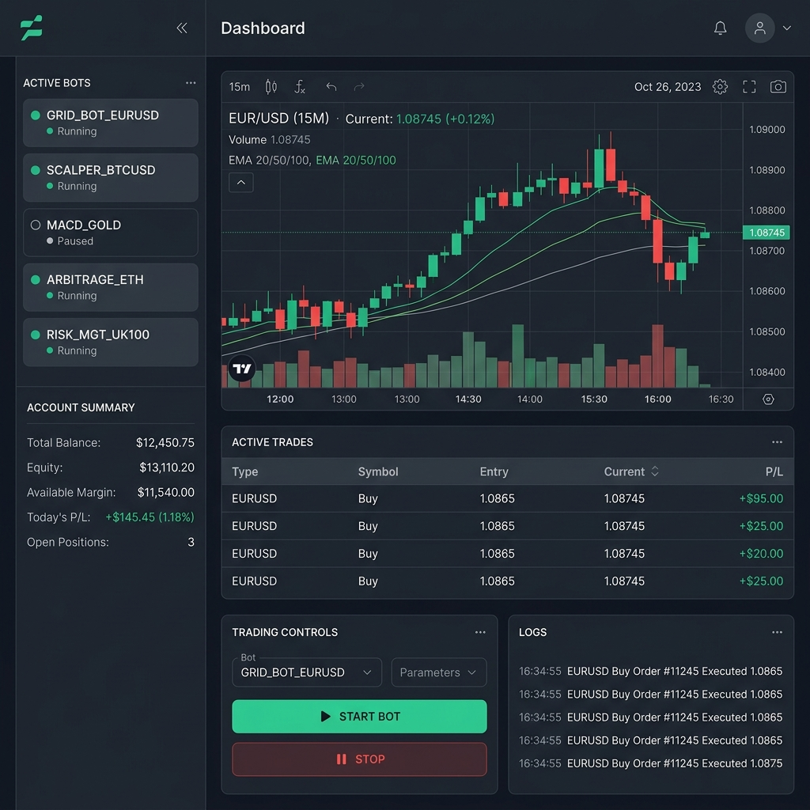

Full-Stack Architecture
Architecting highly performant, resilient client-server applications. Emphasizing fluid interface dynamics, absolute responsiveness, and secure backend RESTful and real-time API integrations.
I'm Kevin Serem — a Senior Developer & Product QA Engineer. I craft secure, high-fidelity web experiences tailored to solve complex global challenges. By blending elite software engineering, cybersecurity rigor, and agricultural economics logic, I bring a deeply reliable human touch to high-performance code.
I'm Kevin Serem, operating out of Kenya to build cutting-edge systems worldwide. My philosophy centers on bridging empathetic human interfaces with unyielding technical precision.
As a seasoned full-stack engineer and product quality assurance specialist, I don't just write functional code. I enforce resilient architectures, absolute responsiveness, and clean memory models. My unique background in Agricultural Economics allows me to inject deep statistical integrity and predictive matrices directly into the digital fabric.
Architecting highly performant, resilient client-server applications. Emphasizing fluid interface dynamics, absolute responsiveness, and secure backend RESTful and real-time API integrations.
Infusing secure coding principles throughout the entire product lifecycle. Conducting exhaustive threat modeling, payload encoding, memory safety validations, and rigorous API rate limits.
Transforming complex agribusiness matrices, resource allocation forecasting, and macro-economic supply calculations into real-time, user-accessible predictive interfaces.

A luxurious, eco-friendly private resort platform built with dynamic booking workflows, CRM pipeline connections, and an immaculate design system ensuring flawless mobile-first client conversion.

A live web-based algorithmic trading client connecting high-frequency WebSockets to the Deriv platform. Implements rigorous client-side token validation, multi-scope management, and zero-latency execution loops.

An advanced statistical intelligence dashboard mapping regional crop health inputs against global pricing streams. Powered by optimized array transformations and dynamic rendering algorithms.
Whether you require a comprehensive software audit, a high-end application rebuild, or a trustworthy global technology collaborator, my communications lines are completely open.